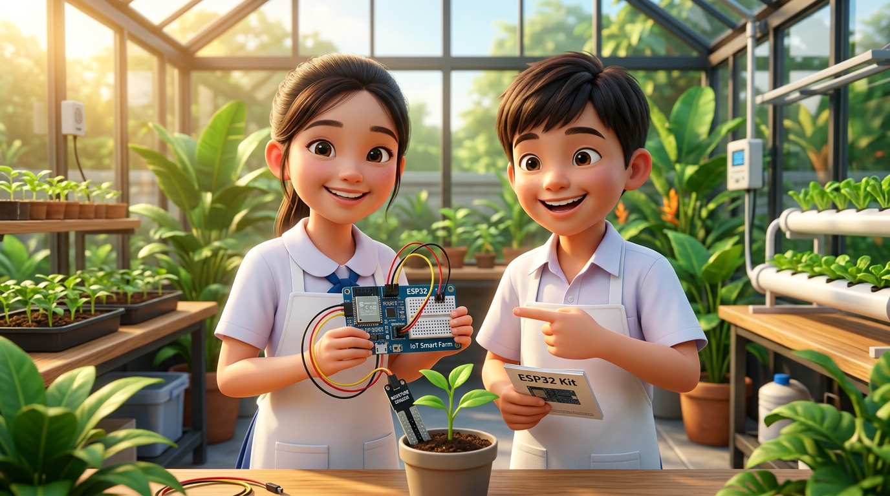
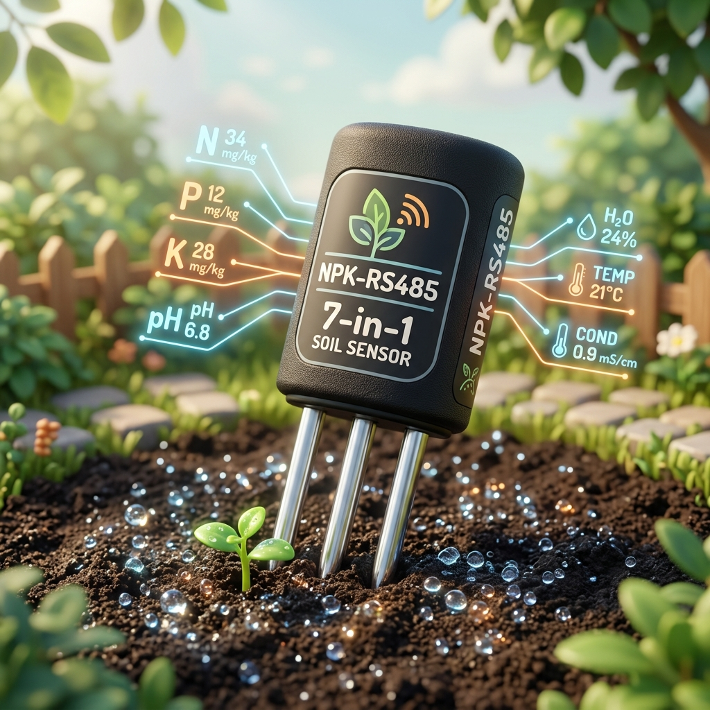
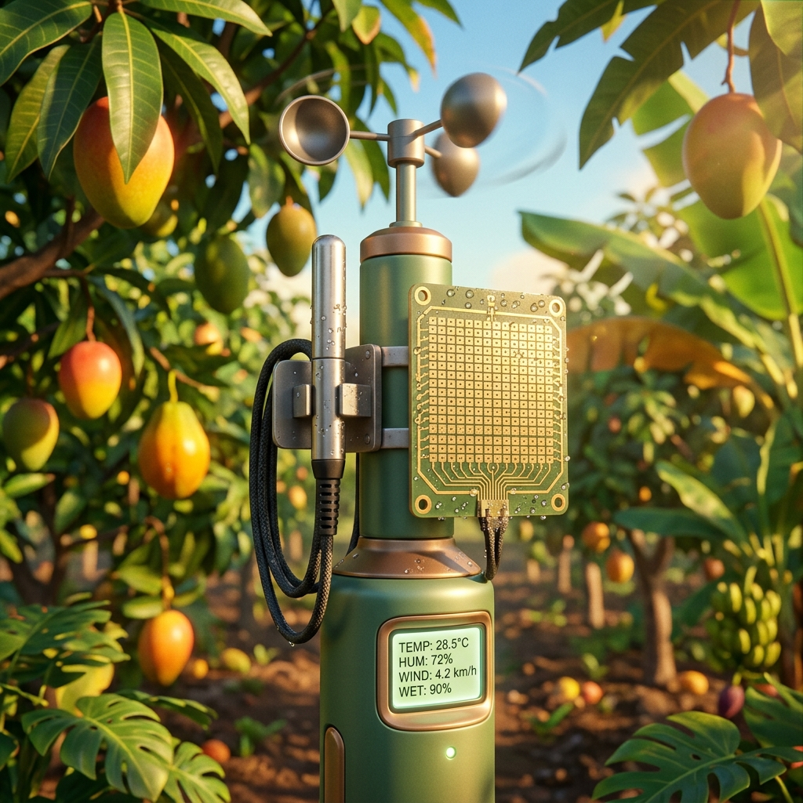
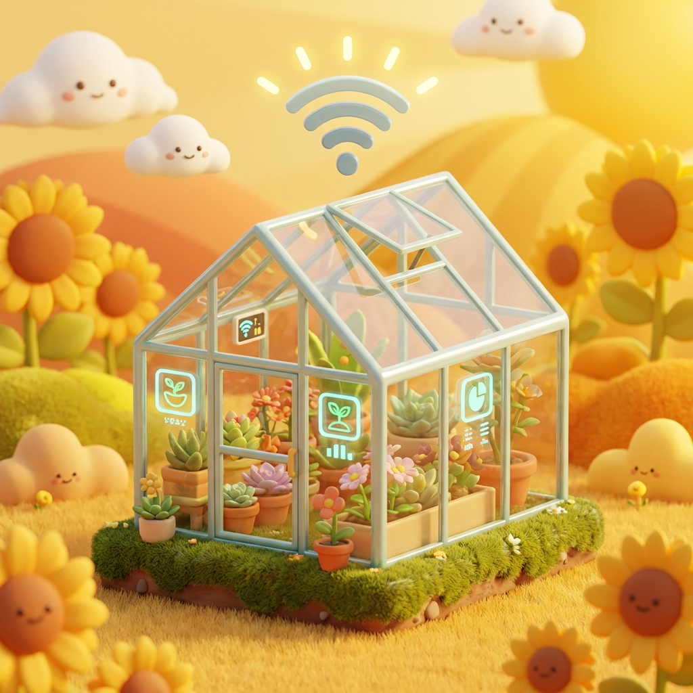
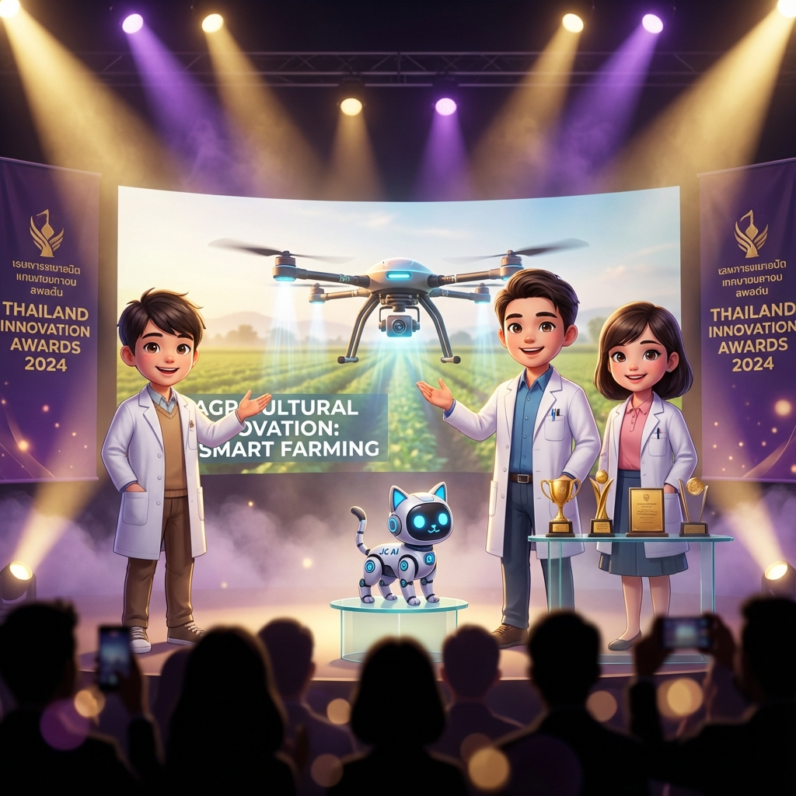

สร้าง ยุวนวัตกรเกษตรแม่นยำ ด้วย
AIoT & Deep Learning Edge Intelligence
กิจกรรมบูรณาการวิทยาศาสตร์และปัญญาประดิษฐ์สำหรับครูและนักเรียน ลงมือประกอบชุดทดลอง Smart Farm Kit จริง เขียนโค้ดไมโครคอนโทรลเลอร์ ESP32 ตรวจวัดดินด้วยเซนเซอร์ความแม่นยำสูง เชื่อมต่อแดชบอร์ดเรียลไทม์ และประยุกต์ใช้โมเดลโครงข่ายประสาทเทียมสั่งการรดน้ำอัตโนมัติ
The S.M.A.R.T. Agri-AI Framework
กิจกรรมบูรณาการวิทยาศาสตร์เกษตรดิจิทัลและปัญญาประดิษฐ์เพื่อสร้างนักนวัตกรรมรุ่นเยาว์

Smart Sensors
เซนเซอร์วัดดิน 7-in-1 (NPK, pH, EC, ความชื้น, อุณหภูมิ) และหัวโพรบสเตนเลสกันน้ำ 🔬
Microcontroller ESP32
เยาวชนไทยลงมือต่อวงจรและเขียนโค้ด MicroPython / C++ สั่งการบอร์ดสมองกลฝังตัว ⚡
AI & Deep Learning
ประยุกต์ใช้โครงข่ายประสาทเทียมพยากรณ์ความต้องการน้ำและการเจริญเติบโตพืชสวน 🧠

Realtime Farm Cloud
ส่งข้อมูลสถานีตรวจอากาศ ความเปียกใบ และความชื้นขึ้นคลาวด์แดชบอร์ด 24 ชม. 🌐

Technology Automation
ควบคุมวาล์วให้น้ำ ปั๊ม 5V หัวพ่นหมอก และพัดลมระบายอากาศอัตโนมัติ 🌀
Precision Innovation
ต่อยอดสู่โครงงานนวัตกรรมสิ่งประดิษฐ์ ยกระดับพืชเศรษฐกิจทุเรียน-มังคุดอย่างยั่งยืน 🌱
เนื้อหาการฝึกอบรม 5 บทเรียนหลัก (Chapter 1 - 5)
ถ่ายทอดองค์ความรู้จากทีมคณาจารย์และผู้เชี่ยวชาญ คณะวิทยาศาสตร์และเทคโนโลยี มรภ.รำไพพรรณี
Lab in Your Pocket (เซนเซอร์มือถือ & ฟาร์ม)
เปลี่ยนสมาร์ตโฟนและเซนเซอร์ให้เป็นห้องทดลองเคลื่อนที่ เรียนรู้วิธีการใช้เซนเซอร์วัดค่าความชื้นในดิน อุณหภูมิ และแสงแดดอย่างแม่นยำ
ESP32 Firmware & MicroPython Coding
ก้าวสู่โลกแห่งสมองกลฝังตัว! เยาวชนไทยเขียนโค้ดภาษา MicroPython และ C++ อ่านสัญญาณเซนเซอร์ และควบคุมอุปกรณ์ไฟฟ้าผ่าน Relay Switch
AI-IoT and Digital Agriculture Tech+
เกษตรอัจฉริยะยุคใหม่! เชื่อมต่อบอร์ดสู่อุปกรณ์เครือข่าย Wi-Fi และ LoRaWAN ตรวจวัดสภาพแวดล้อมในแปลงเกษตรแบบเรียลไทม์
Real-time Cloud Telemetry & Home Assistant
การสร้าง Smart Farm Dashboard แสดงผลกราฟสด แจ้งเตือนสภาวะผิดปกติ และสั่งการปั๊มน้ำ พัดลมระบายอากาศผ่านอินเทอร์เน็ต
Deep Learning on Edge (Crop Health)
เทคโนโลยีปัญญาประดิษฐ์เพื่อการเกษตร! เทรนโครงข่ายประสาทเทียมทำนายค่าความต้องการน้ำ และวิเคราะห์สุขภาพดินพืชสวนจันทบุรี

Mini Hackathon & Pitching Exhibition
ประลองไอเดียโครงงานสิ่งประดิษฐ์เกษตรดิจิทัล นำเสนอผลงานต่อคณะกรรมการ และรับมอบเกียรติบัตรออนไลน์สำหรับผู้ผ่านการอบรม
กำหนดการฝึกอบรมเชิงปฏิบัติการ (2 วัน 16 ชั่วโมง)
ตารางกิจกรรมการเรียนรู้แบบ Active Learning ผสานทฤษฎีและลงมือปฏิบัติจริง
ลงทะเบียนผู้เข้ารับการอบรม และทำแบบทดสอบวัดความรู้ก่อนการอบรม (Pre-test)
ตรวจเช็กรายชื่อ รับชุดเอกสารประจำกลุ่ม และเข้าทำแบบทดสอบ Pre-test ทางออนไลน์
พิธีเปิดโครงการและกล่าวต้อนรับผู้เข้าร่วม
โดย คณบดีคณะวิทยาศาสตร์และเทคโนโลยี มหาวิทยาลัยราชภัฏรำไพพรรณี
บรรยายหัวข้อที่ 1: ทิศทางเกษตรแม่นยำแห่งอนาคต สู่ Deep AIoT และเกษตรดิจิทัลคาร์บอนต่ำ
ภาพรวมเทคโนโลยี Precision Agriculture, สมการความสัมพันธ์พันธุกรรมและสิ่งแวดล้อม P = G + E + (G×E), บทบาทของปัญญาประดิษฐ์ในการลดการใช้น้ำและพลังงาน
ปฏิบัติการที่ 1: การประกอบโครงสร้าง Smart Farm Mini-Kit และการต่อวงจรเซนเซอร์
ลงมือต่อวงจรเซนเซอร์วัดความชื้นในดิน Capacitive, เซนเซอร์ DHT22, เซนเซอร์แสง Lux, และบอร์ดรีเลย์ 4 ช่อง ร่วมกับบอร์ดไมโครคอนโทรลเลอร์ ESP32
ปฏิบัติการที่ 2: การเขียนโปรแกรมอ่านค่าเซนเซอร์และการประมวลผลสัญญาณเบื้องต้น
เขียนโค้ดภาษา C++ ผ่าน Arduino IDE / MicroPython อ่านค่าสัญญาณอนาล็อก 12-bit จากเซนเซอร์ดิน และแปลงค่าเป็นเปอร์เซ็นต์ความชื้นพร้อมระบบตัดสัญญาณรบกวน
ปฏิบัติการที่ 3: การเชื่อมต่อ Wi-Fi และสั่งการระบบรดน้ำผ่าน Web Dashboard
ส่งข้อมูลเซนเซอร์ผ่านเครือข่าย Wi-Fi แสดงผลบนแดชบอร์ด ควบคุมวาล์วและปั๊มน้ำผ่านสมาร์ตโฟน และตั้งค่าการแจ้งเตือนดินแห้งแล้งผ่าน LINE Notify
ห้องปฏิบัติการเสมือนจริง (Interactive Smart Farm Simulator)
ทดลองปรับค่าสภาพแวดล้อม และสังเกตการตัดสินใจของ AI และระบบอัตโนมัติได้แบบเรียลไทม์บนหน้าเว็บ
คลังเซนเซอร์และชุดอุปกรณ์เกษตรอัจฉริยะ (3D Pixar Hardware)
ชุดอุปกรณ์และเซนเซอร์จริงที่ใช้ในโครงการจำลองภาพเสมือน 3 มิติความละเอียดสูง พร้อมฟังก์ชันการทำงานและรายละเอียดการต่อขาไอซี
7-in-1 Soil Multi-Probe (NPK, pH, EC, Temp, Moisture)
โพรบสเตนเลสเกรด 316 วัดค่าปุ๋ยไนโตรเจน (N), ฟอสฟอรัส (P), โพแทสเซียม (K), กรด-ด่าง (pH), สภาพนำไฟฟ้า (EC), ความชื้น และอุณหภูมิในหัวเดียว ผ่านโปรโตคอล Modbus RTU
Capacitive Soil Moisture Probe (ความชื้นดินต้านสนิม)
เซนเซอร์แบบประจุไฟฟ้าทนทานต่อการกัดกร่อน ป้องกันสนิม อ่านค่าแรงดันอนาล็อก 12-bit (0-4095) เข้าขา GPIO34 บนบอร์ด ESP32 เพื่อคำนวณ Volumetric Water Content (%)
SHT30 Climate & Leaf Wetness (สถานีอากาศและเปียกใบ)
โพรบวัดอุณหภูมิ-ความชื้นสัมพัทธ์หัวตาข่ายโลหะ SHT30 พร้อมกริดแผ่นทองคำวัดหยดน้ำค้างบนใบพืช (Leaf Wetness) สำหรับเตือนการระบาดของโรคราสนิมและเชื้อรา
Crop Vision AI Camera (กล้องวินิจฉัยโรคพืช)
โมดูลกล้อง AI ตรวจจับลักษณะใบขาดธาตุอาหาร วินิจฉัยโรคใบติดในทุเรียน และแมลงศัตรูพืช ประมวลผลโมเดลคอมพิวเตอร์วิทัศน์บน Edge Device แบบเรียลไทม์
Smart DO & EC Meter (ตรวจวัดค่าน้ำและปุ๋ย)
ตรวจวัดปริมาณออกซิเจนละลายน้ำ (Dissolved Oxygen) และค่าการนำไฟฟ้าเพื่อประเมินความเข้มข้นสารละลายธาตุอาหารในระบบไฮโดรโปนิกส์และน้ำรดสวน
BH1750 & PAR Quantum Sensor (วัดแสงสังเคราะห์)
เซนเซอร์วัดค่าความเข้มแสงแดด (0-65,535 Lux) และประเมินค่ารังสีสังเคราะห์แสง (Photosynthetically Active Radiation: PAR) ควบคุมการกางสแลนพรางแสงอัตโนมัติ
ESP32 AIoT Core Board & Relay Module (สมองกลฝังตัว)
หน่วยประมวลผล 32-bit Dual-Core 240MHz พร้อมโมดูล Wi-Fi + BLE และบอร์ดรีเลย์ 4 ช่องแยก Optocoupler สำหรับสั่งการโซลินอยด์วาล์วและปั๊มน้ำ 12V
Coding & Automation Blocks (บล็อกคำสั่งควบคุม)
ระบบเขียนโปรแกรมแบบผสมผสานบล็อกคำสั่งร่วมกับภาษาไพทอน (Visual Block-to-Python) ช่วยให้นักเรียนไทยเข้าใจ Logic การควบคุมเงื่อนไขเซนเซอร์ได้อย่างรวดเร็ว
คลังโค้ดตัวอย่างและผู้ช่วยเขียนโค้ดอัจฉริยะ (AI Coding Assistant)
รวมตัวอย่างโค้ดคำสั่งสำหรับบอร์ด ESP32 ทั้งภาษา C++ (Arduino IDE) และ MicroPython พร้อมคัดลอกไปใช้งานได้ทันที
📁 เลือกหัวข้อโค้ดตัวอย่าง:
แบบทดสอบวัดความรู้ AIoT & เกษตรแม่นยำ (Pre-test / Post-test)
ประเมินความรู้ความเข้าใจเกี่ยวกับเทคโนโลยีเซนเซอร์ การเขียนโปรแกรม และการประยุกต์ใช้โมเดล Deep Learning
ระบบออกเกียรติบัตรออนไลน์ (E-Certificate Generator)
สำหรับผู้ผ่านการฝึกอบรมเชิงปฏิบัติการ กรอกข้อมูลเพื่อสร้างใบเกียรติบัตรและดาวน์โหลดได้ทันที
📝 ข้อมูลผู้รับเกียรติบัตร
ได้ผ่านการฝึกอบรมเชิงปฏิบัติการโครงการ "LEQs SciRBRU Digital Precision Farming & Deep AI"
การประยุกต์ใช้เทคโนโลยี AIoT และ Deep Learning ในการเกษตรแม่นยำยุคใหม่
รวมระยะเวลาการฝึกอบรม 16 ชั่วโมง ขอให้มีความเจริญก้าวหน้าในวิชาชีพและสร้างสรรค์นวัตกรรมสืบไป
คณะวิทยากรและทีมงานผู้ดำเนินโครงการ
ศูนย์พัฒนานวัตกรรมเกษตรดิจิทัล คณะวิทยาศาสตร์และเทคโนโลยี มหาวิทยาลัยราชภัฏรำไพพรรณี
ผศ.ดร.ชีวะ ทัศนา
ผู้เชี่ยวชาญด้านฟิสิกส์เกษตรดิจิทัล, AIoT และการประมวลผลสัญญาณ คณะวิทยาศาสตร์และเทคโนโลยี มรภ.รำไพพรรณี
ผศ.ดร.จิรภัทร จันทมาลี
อาจารย์ประจำคณะวิทยาศาสตร์และเทคโนโลยี มหาวิทยาลัยราชภัฏรำไพพรรณี
นางสาววิดาพร ธนะปฐมชัย
นักศึกษาหลักสูตรฟิสิกส์ประยุกต์ คณะวิทยาศาสตร์และเทคโนโลยี มรภ.รำไพพรรณี
นายวุฒิชัย เจริญวงศ์
นักศึกษาหลักสูตรฟิสิกส์ประยุกต์ คณะวิทยาศาสตร์และเทคโนโลยี มรภ.รำไพพรรณี
ระบบลงทะเบียนและบัตรประจำตัวผู้เข้าร่วมอบรม
สำหรับครูและนักเรียนที่สนใจพัฒนาทักษะด้าน AIoT และ Deep Learning ในการเกษตรแม่นยำ (ฟรี ไม่มีค่าใช้จ่าย รับจำนวน 60 ท่าน)
รายชื่อผู้สมัครเข้าร่วมการอบรมเชิงปฏิบัติการ
ตรวจสอบสถานะการลงทะเบียนและรายชื่อผู้เข้าร่วมโครงการทั้งหมด
| รหัสลงทะเบียน | ชื่อ - นามสกุล | ประเภท | โรงเรียน / หน่วยงาน | จังหวัด | ระดับชั้น / กลุ่มสาระ | สถานะการสมัคร |
|---|---|---|---|---|---|---|
| กำลังโหลดรายชื่อผู้สมัคร... | ||||||